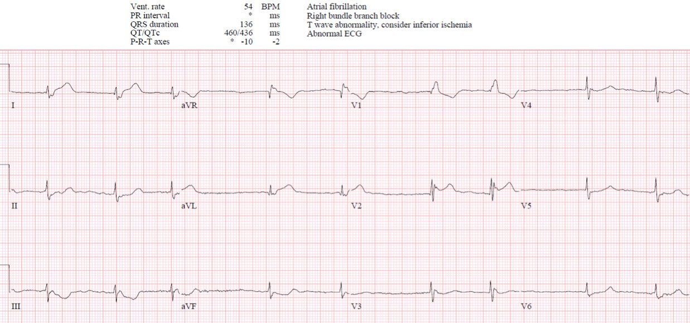
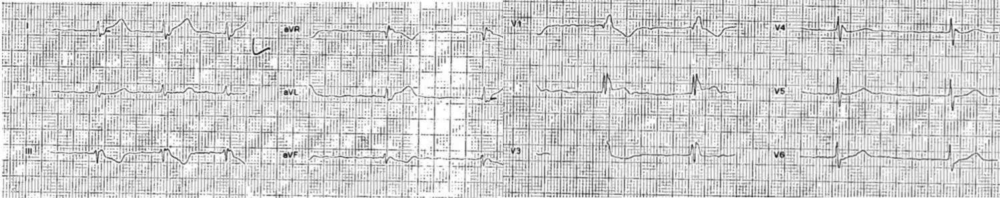
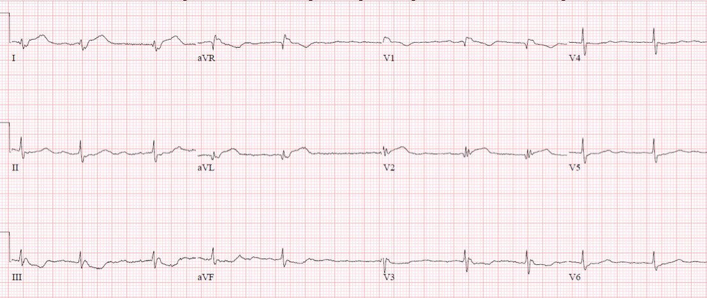
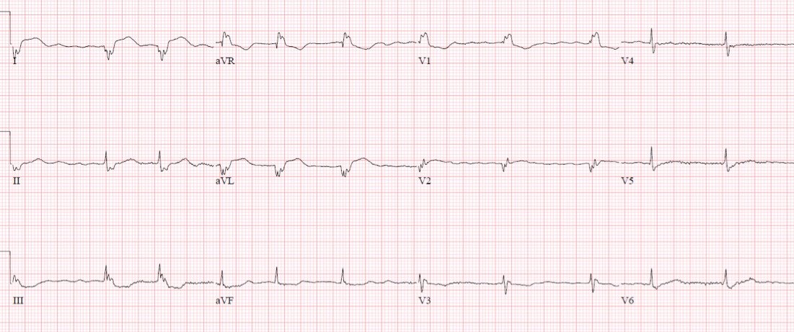
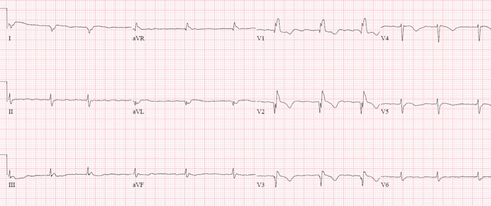
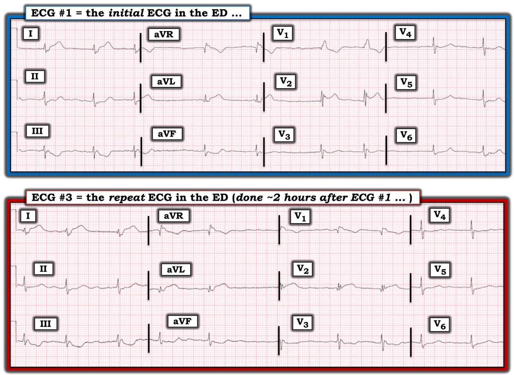

18/07/2022 — Đau ngực, RBBB nhưng “STEMI âm tính”: đây là kích hoạt phòng thông tim sai, hay hủy kích hoạt sai?
Bản dịch tiếng Việt của bài "Chest pain, RBBB but “STEMI Negative”: Is this a false cath lab activation, or a false cancellation?" – Dr. Smith’s ECG Blog. Giữ nguyên toàn bộ 7 hình ảnh của bản gốc.
Một bệnh nhân 90 tuổi có tiền sử rung nhĩ
đến viện vì đau ngực sau xương ức từng cơn trong hai tuần, mỗi cơn kéo dài
vài phút. Một giờ trước khi đến viện, cơn đau trở nên liên tục và dữ dội hơn,
kèm buồn nôn và mệt mỏi toàn thân, và nhân viên cấp cứu ngoài viện đã đưa bệnh nhân đến
khoa cấp cứu (ED) dưới dạng báo động STEMI (code STEMI). Tần số tim khoảng 50 mấy nhịp/phút, các dấu hiệu sinh tồn khác bình thường. Bạn
nghĩ gì?


Có rung nhĩ, blốc nhánh phải (RBBB),
trục bình thường và điện thế bình thường. RBBB lẽ ra phải gây ST chênh xuống thứ phát
và sóng T đảo ngược ở các chuyển đạo trước, đi kèm dạng RsR’ (như ở V1).
Nhưng ở đây, tại V2 lại có ST chênh lên không phù hợp và sóng T dương. Ngoài ra
còn có ST chênh lên (STE) nhẹ ở I/aVL, ngược hướng với sóng S trát đậm, điều mà đôi khi
có thể thấy trong RBBB. Nhưng cũng có sóng T dạng xuống-lên (down/up) ở III/aVF, là thay đổi soi gương
của những gì có thể là sóng T tối cấp ở I/aVL: hãy so sánh độ đầy đặn của các sóng T này
và kích thước của chúng so với QRS, đối chiếu với sóng T có kích thước bình thường ở
V5-6.
Như vậy, đây có thể là RBBB kèm hình ảnh tổn thương dạng dấu hiệu “Cờ Nam Phi” (South African flag)
ở I/aVL/V2 với thay đổi soi gương ở III/aVF, tương ứng với
tắc nhánh chéo thứ nhất[1]. Hình ảnh tương tự cũng thấy trên điện tâm đồ
do nhân viên cấp cứu ngoài viện ghi, là cơ sở để họ kích hoạt chuyển viện STEMI: lưu ý ST chênh lên đồng hướng
ở V2 kèm đoạn ST thẳng đuỗn.


Khoa tim mạch đánh giá bệnh nhân tại khoa cấp cứu và ghi nhận: “RBBB
với ST chênh lên dạng lõm (concave up) đơn độc 1,5 mm ở V2, và ST chênh xuống (STD) ở mức giới hạn 1 mm ở III, không
đạt tiêu chuẩn STEMI. Siêu âm tim tại giường nhìn chung bình thường. Không phải báo động STEMI vì
điện tâm đồ không đạt tiêu chuẩn và không có rối loạn vận động thành khu trú trên
siêu âm tim tại giường.” Vì vậy họ đã hủy báo động STEMI.
Bác sĩ cấp cứu khám bệnh nhân, ghi nhận ý kiến của
khoa tim mạch là vận động thành khu trú bình thường và không có STEMI, nên đã tìm
các nguyên nhân đau ngực khác. Troponin I độ nhạy cao ban đầu là 6 ng/L
(bình thường <16 ở nữ và >26 ở nam [người dịch: dấu “>” ở giá trị cho nam nhiều khả năng là lỗi đánh máy của “<”]). Điều này không loại trừ OMI ở
một bệnh nhân mới đau ngực được một giờ: một phần tư số bệnh nhân STEMI đến viện
trong vòng hai giờ sau khởi phát triệu chứng có troponin thấp hơn bách phân vị thứ 99
[2]. Tuy nhiên, điều này có thể góp phần tạo ra quán tính chẩn đoán (diagnostic momentum) đi chệch khỏi OMI.
D-dimer và X-quang ngực bình thường, nhưng cơn đau vẫn tiếp diễn nên bệnh nhân được dùng
Tylenol và xét nghiệm lại troponin.
Hai giờ sau khi đến viện, bệnh nhân vẫn còn đau,
troponin lặp lại là 50, và điện tâm đồ được ghi lại.


Tương tự, nhưng giờ đây đã bắt đầu xuất hiện sóng Q và đoạn ST
dạng lồi ở V2. Bệnh nhân được dùng morphin và chờ chụp CT ngực để
loại trừ bóc tách.
Sáu giờ sau khi đến viện, CT ngực không có gì đặc biệt nhưng
bệnh nhân vẫn còn đau, và troponin lặp lại là 200. Vì vậy bệnh nhân được dùng nitro
và thêm morphin, mời hội chẩn CCU, và ghi lại điện tâm đồ:


Giờ đây sóng R ở I/aVL và V2 đã mất hoàn toàn, xác nhận
nhồi máu vùng D1.
Hội chẩn CCU ghi nhận: “RBBB kèm thay đổi ST ở I/aVL và V2. Do
không có nguyên nhân nào khác và troponin tăng, chẩn đoán khả dĩ nhất là
NSTEMI, nên sẽ cho nhập viện để chụp mạch vành.” Thiếu máu cục bộ kháng trị là chỉ định
tái tưới máu ngay lập tức theo các hướng dẫn, nhưng gần 95% NSTEMI nguy cơ cao
không được xử trí theo cách này [3]. Mười một giờ sau khi đến viện, troponin lặp lại
là 1700. Mười ba giờ sau khi đến viện, bệnh nhân được dùng thêm
morphin và Tylenol vì vẫn còn đau. Mười sáu giờ sau khi đến viện, troponin lặp lại
là 18.000.
Sau đó bệnh nhân được đưa đi thông tim, phát hiện tắc 95% D1.
Siêu âm tim ngày hôm sau ghi nhận tương ứng “thành trước và thành bên đoạn giữa-xa
và vách mỏm giảm động/vô động nặng”, với EF 40%, xác nhận
kết quả siêu âm tim tại giường ban đầu là không đáng tin cậy. Troponin đỉnh là 25.000, xác nhận
troponin bình thường ban đầu là không đáng tin cậy. Điện tâm đồ lúc ra viện cho thấy sóng Q
ở I/aVL và V1-3, kèm sóng T xẹp xuống và đảo ngược:


Chẩn đoán ra viện là “NSTEMI”. Điều này bảo đảm rằng việc
chuyển viện ban đầu của nhân viên cấp cứu ngoài viện sẽ được xếp loại là kích hoạt sai thay vì hủy kích hoạt sai, và sự chậm trễ lớn trong tái tưới máu (khi troponin đã lên tới 18.000, dù troponin ban đầu chỉ là 6) sẽ được
coi là chuẩn chăm sóc đối với NSTEMI thay vì là một cơ hội để
cải tiến.
Điều cần nhớ
1.
Các trường hợp hủy báo động STEMI cần được đánh giá lại và phân loại lại, không dựa vào việc điện tâm đồ có đạt tiêu chuẩn STEMI hay không mà dựa vào việc bệnh nhân có OMI hay không
2.
Tiêu chuẩn STEMI bỏ sót các dấu hiệu điện tâm đồ và lâm sàng của OMI, bao gồm hình ảnh tắc nhánh chéo
thứ nhất, thay đổi sóng T tối cấp/soi gương, sóng Q
cấp, và thiếu máu cục bộ kháng trị
3.
Siêu âm tim tại giường có thể bổ trợ nhưng không nên
thay thế việc đọc điện tâm đồ, vì cả hai đều có điểm mạnh và hạn chế
4.
Troponin ban đầu trong giới hạn bình thường không loại trừ OMI, và troponin tăng là một dấu chỉ muộn của OMI
5.
Morphin có liên quan đến chậm trễ tái tưới máu
6.
Thiếu máu cục bộ kháng trị là chỉ định
tái tưới máu ngay lập tức
7.
Nhồi máu cơ tim nên được phân loại theo OMI/NOMI chứ không phải STEMI/NSTEMI
để rút kinh nghiệm và tránh chậm trễ tái tưới máu
TÀI LIỆU THAM KHẢO
1.
Littman. South African flag sign: a teaching
tool for easier recognition of high lateral infarct. Tạp chí Am J Emerg Med, 2016
2.
Wereski và cs. High-sensitivity cardiac troponin
concentrations at presentation in patients with ST-segment elevation myocardial
infarction. Tạp chí JAMA Cardiol, 2020
3.
Lupu và cs.
Immediate and early percutaneous coronary intervention in very high risk
and high risk non-ST segment elevation myocardial infarction patients. Tạp chí Clin
Cardiol, 2022
===================================
BÌNH LUẬN CỦA TÔI, bởi KEN GRAUER, MD (18/7/2022):
===================================
Người ta thường nói rằng 3 yếu tố quan trọng nhất trong lĩnh vực bất động sản là: i) Vị trí; ii) Vị trí; và, iii) Vị trí — những yếu tố mà gộp lại còn quan trọng hơn cả các đặc điểm của chính ngôi nhà trong việc quyết định giá trị của nó.
“Chủ đề” của ca hôm nay là: đối với việc đọc điện tâm đồ — cũng có 3 yếu tố “quan trọng nhất” cần xem xét khi đánh giá thay đổi sóng ST-T về khả năng có OMI ( = tắc mạch vành cấp). 3 yếu tố này là: i) Hình dạng; ii) Tính tương xứng; và, iii) Vị trí — những yếu tố mà gộp lại quan trọng hơn mức độ ST chênh lên có (hay không) hiện diện. Xem kỹ hơn 3 yếu tố này:
- Hình dạng của sóng ST-T có gợi ý tắc cấp hay không?
- Kích thước của thay đổi sóng ST-T có tương xứng với biên độ QRS ở chuyển đạo đang xem xét hay không?
- Vị trí của thay đổi sóng ST-T (chênh lên hoặc chênh xuống) có phù hợp với (các) vùng giải phẫu xác định — và — có gợi ý một biến cố cấp tính hay không?
Tôi tập trung bình luận vào 2 điện tâm đồ đầu tiên được ghi tại khoa cấp cứu trong ca hôm nay. Để cho rõ — tôi đã đặt các bản ghi này cạnh nhau trong Hình 1:


Hình dạng, Tính tương xứng, Vị trí — Quan trọng hơn “Mức độ”!
Bác sĩ tim mạch được mời hội chẩn trong ca hôm nay đã khám bệnh nhân tại khoa cấp cứu — và hủy “báo động STEMI” (Code STEMI) vì “mức độ” ST chênh lên được cho là “không đủ để đạt tiêu chuẩn STEMI”.
Như phần bàn luận xuất sắc của Dr. McLaren ở trên — các tiêu chuẩn đã được đáp ứng hơn cả mức đủ để cần thông tim kịp thời. Tôi xin bổ sung như sau.
- Bệnh nhân hôm nay vừa thuộc nhóm “tỷ lệ mắc cao” vừa thuộc nhóm “nguy cơ cao” về bệnh suất/tử suất đáng kể do nhồi máu cơ tim cấp. Bệnh nhân 90 tuổi — có tiền sử rung nhĩ (AFib) đã biết — và có bệnh sử đáng lo ngại về đau ngực trong những tuần gần đây, mà 1 giờ trước khi đến viện đã trở nên liên tục và dữ dội hơn nhiều.
- Làm tăng thêm nguy cơ đó (ngay cả trước khi xem các điện tâm đồ của bà) — là nhịp AFib chậm của bà, với tần số tim ở mức thấp của khoảng 50 mấy mặc dù đau ngực liên tục và dữ dội.
Như Dr. McLaren đã nêu, điện tâm đồ ban đầu tại khoa cấp cứu ( = điện tâm đồ #1) — cho thấy AFib chậm, RBBB và thay đổi sóng ST-T bất thường. Đây là lúc 3 yếu tố MẤU CHỐT gồm hình dạng — tính tương xứng — và vị trí phát huy vai trò.
- Điện thế QRS giảm ở mọi nơi. Bản thân điều này đã là một yếu tố nguy cơ tiềm tàng — vì trong bối cảnh nhồi máu cấp, điện thế thấp có thể là dấu hiệu của giảm co bóp toàn bộ do “choáng cơ tim” (myocardial stunning — Xem thêm về chủ đề này trong phần Bình luận của tôi ở cuối trang của bài ngày 12 tháng Mười Một năm 2020 trên Dr. Smith’s ECG Blog).
- Xét trong bối cảnh điện thế giảm toàn bộ này — sóng T ở chuyển đạo I và aVL bên cao của điện tâm đồ #1 vượt cao hẳn so với sóng R tương ứng ở các chuyển đạo này (tức là, các sóng T này cao một cách không tương xứng).
- Hình dạng của các sóng T ở vùng bên cao này cũng bất thường — ở chỗ chúng “quá đầy đặn” (hypervoluminous — đỉnh béo hơn và đáy rộng hơn so với mức lẽ ra phải có).
- Chẩn đoán OMI được xác nhận nhờ vị trí của ST chênh xuống soi gương ở cả 3 chuyển đạo dưới của điện tâm đồ #1 — với hình ảnh đối xứng như soi gương ở chuyển đạo III (so với aVL) và phần cuối sóng T dương mà Dr. McLaren đã nhấn mạnh.
- Cuối cùng — hình dạng của sóng ST-T ở các chuyển đạo từ V2 đến V6 rõ ràng là bất thường — điều này cùng với hình ảnh RBBB ở chuyển đạo V1 khiến 11/12 chuyển đạo trên điện tâm đồ ban đầu này rõ ràng bất thường — ở một bệnh nhân 90 tuổi bị đau ngực không thuyên giảm và nhịp chậm đáng lo ngại trong bối cảnh AFib. Vì vậy — thông tim kịp thời thực sự có chỉ định.
Brugada típ 2 ở chuyển đạo V2?
Tôi thấy hình dạng của phức bộ QRST ở chuyển đạo V2 của điện tâm đồ #1 rất thú vị — ở chỗ nó biểu hiện hình ảnh “yên ngựa” (saddleback) phù hợp với hình ảnh điện tâm đồ Brugada típ 2.
- Dù đã bao nhiêu lần gặp hình ảnh điện tâm đồ Brugada típ 1 và Brugada típ 2 — tôi vẫn thấy mình phải tham khảo các hình ảnh trong Hình 2, mà tôi lấy lại từ phần Bình luận của tôi ở cuối trang của các bài ngày 17 tháng Tư năm 2022 và ngày 5 tháng Chín năm 2020 trên Dr. Smith’s Blog.
- Điều tôi thấy đặc biệt thú vị ở hình ảnh “yên ngựa” này ở chuyển đạo V2 của điện tâm đồ #1 — là có ST chênh lên ở chính chuyển đạo này — nhưng không có ở cả hai chuyển đạo kế cận (tức là, không có ở V1 hay V3). Khi mới nhìn thấy bản ghi này — ban đầu tôi không chắc chắn LIỆU ST chênh lên ở chuyển đạo V2 này là biểu hiện của một kiểu hình sao chép Brugada típ 2 (Brugada phenocopy — do ổ nhồi máu cơ tim cấp lớn của bệnh nhân này) đơn thuần — HAY LÀ — một phần (hoặc thậm chí toàn bộ) ST chênh lên là phản ánh của hình ảnh “Cờ Nam Phi” do tắc D-1 cấp mà Dr. McLaren đã nhắc đến (Xem phần Bình luận của tôi và hình minh họa ở cuối trang của bài ngày 8 tháng Tư năm 2022 trên Dr. Smith’s Blog để biết thêm về hình ảnh Cờ Nam Phi).
- Việc hình thái QRS “yên ngựa” không có mặt trên điện tâm đồ trước viện của đội cấp cứu ngoài viện (EMS) lẫn trên điện tâm đồ #3 (đã trình bày ở trên trong Hình 1) — và — việc “hình dạng” của ST chênh lên dạng lõm hướng lên kiểu “yên ngựa” ở điện tâm đồ #1 không thấy trên bản ghi trước viện của EMS hay trên điện tâm đồ #3 (ghi ~2 giờ sau điện tâm đồ #1) — với tôi gợi ý rằng đã có cả kiểu hình sao chép Brugada típ 2 lẫn ST chênh lên đang tiến triển do tắc D-1 cấp — và khi OMI tiến triển, hình ảnh kiểu hình sao chép Brugada típ 2 đã biến mất!

Hình 2: Ôn tập các hình ảnh điện tâm đồ trong hội chứng Brugada (phỏng theo Brugada và cs. trên JACC: Tập 72; Số 9; 2018) — (A) Hình ảnh điện tâm đồ Brugada típ 1, cho thấy ST chênh lên dạng vòm (coved) ≥2 mm ở ≥1 chuyển đạo trước tim phải, theo sau là sóng T âm. (B) Hình ảnh điện tâm đồ Brugada típ 2 (hình ảnh “yên ngựa” (saddle-back)) — cho thấy ST chênh lên dạng lõm (concave-up) ≥0,5 mm (thường ≥2 mm) ở ≥1 chuyển đạo trước tim phải, theo sau là sóng T dương. (C) Các tiêu chuẩn bổ sung để chẩn đoán hình ảnh điện tâm đồ Brugada típ 2 (TRÊN: tiêu chí góc ß; DƯỚI: Có hình ảnh Brugada típ 2 nếu tại vị trí 5 mm phía dưới điểm cao nhất của sóng r’ — đáy của tam giác được tạo thành ≥4).
So sánh điện tâm đồ #1 và điện tâm đồ #3 (trong Hình 1)
Hãy quay lại một chút để một lần nữa XEM KỸ 2 bản ghi trong Hình 1. Vị trí của 2 chuyển đạo cho thấy các thay đổi MẤU CHỐT trên điện tâm đồ ghi lại tại khoa cấp cứu ( = điện tâm đồ #3) — là chuyển đạo V1 và V2.
- Ngoài việc sóng Q ở chuyển đạo V1 của điện tâm đồ #3 to ra đáng kể — giờ đây còn có ST chênh lên ở chuyển đạo này, điều không có trên điện tâm đồ #1!
- Đây là một dấu hiệu thật — điều này được xác nhận bởi sự xuất hiện mới của sóng Q ở chuyển đạo V2 và ST chênh lên dạng vòm ( = kiểu “mặt mếu”). Dù mức ST chênh lên ở chuyển đạo V2 không lớn — hình dạng của nó (tức là, dạng vòm) gợi ý mạnh nhồi máu cấp đang tiến triển — và mức ST chênh lên ở V2 rõ ràng là không tương xứng khi so với biên độ rất nhỏ của sóng R ở chuyển đạo này.
- Vị trí của ST chênh lên này ở chuyển đạo V2 + ở chuyển đạo I và aVL (với mức ST chênh lên soi gương tương đương ở chuyển đạo III) [người dịch: nguyên văn ghi “ST chênh lên soi gương”, nhiều khả năng là lỗi đánh máy của “ST chênh xuống soi gương”] — đáp ứng vị trí chuyển đạo của hình ảnh Cờ Nam Phi — vốn có giá trị chẩn đoán tắc D-1 cấp được phát hiện khi thông tim trong ca hôm nay.
Điểm cần học bổ sung:
- Khi đánh giá thay đổi sóng ST-T về khả năng có OMI cấp — Hình dạng, tính tương xứng và vị trí quan trọng hơn “mức độ” ST chênh lên.